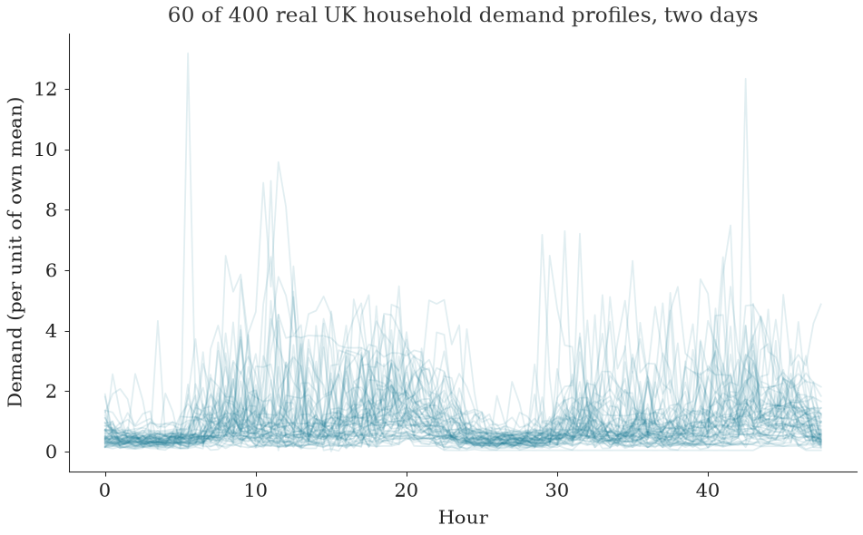
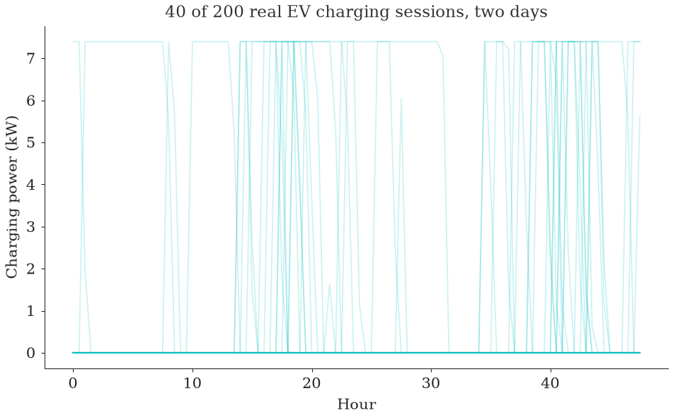
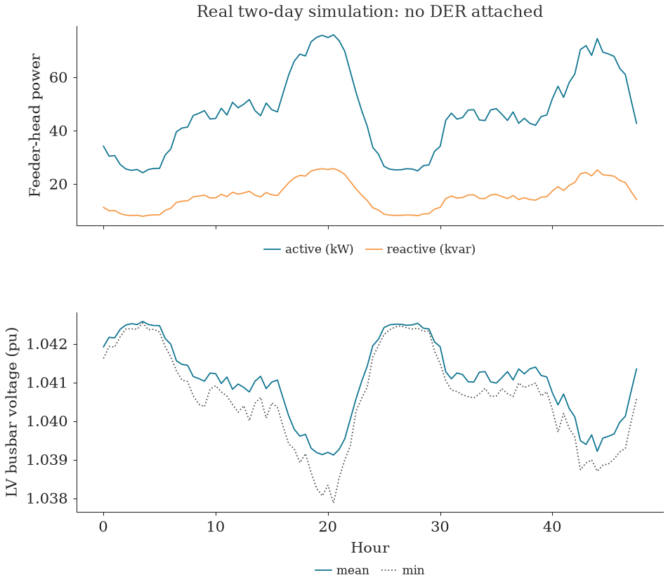
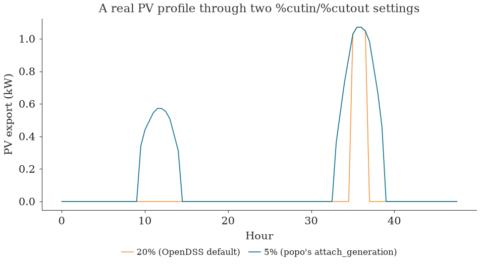
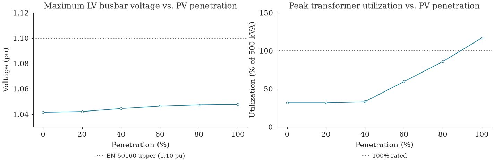
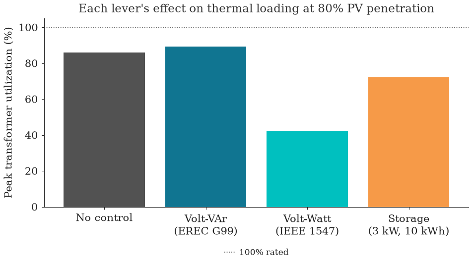
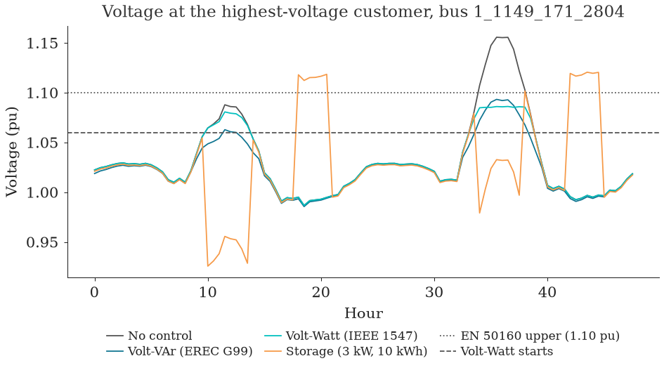
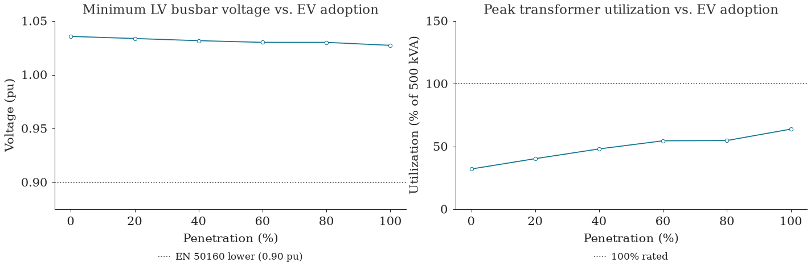

Time-Series Simulation and DER Modeling#
Objectives#
A single power-flow snapshot says nothing about whether a feeder survives a real day: demand and generation both move, and the question a DSO (distribution system operator) actually has to answer (does connecting one more customer's rooftop solar or EV charger push this feeder past a statutory limit?) only has an answer once real profiles are replayed through a solved circuit over time. This notebook walks through doing that with popo:
- Attach real household, PV and EV profiles to a real LV feeder with
popo.scenarios. - Step a two-day time series with
popo.powerflow.solve_time_series, with convergence reported rather than printed. - Sweep PV and EV penetration with
run_uk_sweepto find where, and whether, a limit is crossed. - Record what every customer sees, not only the substation, and summarise each customer's excursions with
VoltageLimits.event_summary. - Compare three customer-side levers (Volt-VAr, Volt-Watt and storage) at the same penetration.
Getting the data#
Everything here runs on data that ships with popo in tests/data/, so the notebook runs anywhere popo is installed:
dss_uk_network_17_1_1149/: a real UK LV network, 188 single-phase residential customers behind one 500 kVA secondary substation, chosen as the weaker of two candidate substations by voltage sensitivity (seedocs/simulations.md).uk_household_pu_96.parquet: 400 real household demand profiles, each normalised to its own mean.uk_pv_unit_96.parquet: a real PVWatts-driven generation profile, per unit of rated capacity.uk_ev_kw_96.parquet: 200 real EV charging sessions, in kW.
Each covers 96 half-hourly steps, two days. That is enough to see a daily cycle repeat, and short enough to keep every solve below quick; it is not a year, so there is no seasonal worst day to pick out, and the results below describe these two days.
from pathlib import Path
import warnings
import matplotlib.pyplot as plt
import numpy as np
import pandas as pd
import style
style.configure()
from popo.network.transformers import Transformer
from popo.plotting.tables import themed_gt
from popo.powerflow.solver import solve_time_series
from popo.powerflow.sweep import run_uk_sweep
from popo.scenarios.der import (
PowerFactorProfile,
assign_household_profiles,
attach_charging,
attach_generation,
write_load_shape,
)
from popo.standards.inverter import InverterCapability, VoltVarCurve
from popo.standards.voltage import VoltageLimits
DATA = Path("../tests/data")
FEEDER = DATA / "dss_uk_network_17_1_1149"
HORIZON = 96 # two days at 30-minute steps, the vendored fixture's full length
SEED = 20260904
print(f"Feeder fixture: {FEEDER}")
print(f"Horizon: {HORIZON} steps ({HORIZON * 0.5:.0f} hours)")
Feeder fixture: ../tests/data/dss_uk_network_17_1_1149
Horizon: 96 steps (48 hours)
1. The feeder#
Every section below runs on the same network: network_17_1_1149, 188 single-phase residential customers spread across all three phases, behind one 500 kVA secondary transformer (TR171_11491_1). The fixture's master file carries no Solve of its own, so every solve below is one this notebook issues.
def build_bare_circuit():
"""Compile the feeder with no DER and no household profiles: just the base network."""
import opendssdirect as dss
dss.Text.Command("Clear")
with warnings.catch_warnings():
warnings.simplefilter("ignore")
dss.Text.Command(f'Redirect "{FEEDER / "master_network_17_1_1149.dss"}"')
return dss
def customers_of(dss):
"""Every load on the feeder, as (name, bus) pairs; the whole feeder is one substation's worth."""
names = dss.Loads.AllNames()
buses = []
for name in names:
dss.Circuit.SetActiveElement(f"Load.{name}")
buses.append(dss.CktElement.BusNames()[0].split(".")[0])
return list(zip(names, buses, strict=True))
def report_divergence(result, label=""):
"""Print how many steps of a sweep did not converge."""
frac = result.diverged_steps / result.total_steps
prefix = f"{label}: " if label else ""
print(f"{prefix}{result.diverged_steps} of {result.total_steps} steps diverged ({frac:.2%})")
MONITOR = Transformer(
name="TR171_11491_1",
rating_kva=500.0,
low_voltage_bus="1_1149_1",
secondary_kv=0.416,
normal_rating_kva=550.0,
)
dss0 = build_bare_circuit()
customers0 = customers_of(dss0)
dss0.Text.Command("set mode=snap")
dss0.Solution.Solve()
print(f"Customers: {len(customers0)}")
print(f"Converged: {dss0.Solution.Converged()}")
print(
f"Monitored transformer: {MONITOR.name}, rated {MONITOR.rating_kva:.0f} kVA, "
f"secondary bus {MONITOR.low_voltage_bus}"
)
def physical(records: pd.DataFrame) -> pd.DataFrame:
"""Drop rows from a non-converged solve before summarising.
A step whose control loop did not converge can still report a "solved"
power flow (see Section 4's own point about SolveReport), and on a
severely overloaded scenario the reported numbers can be nonsensical
(voltage or apparent power many orders of magnitude outside anything
physical) rather than merely wrong. Filtering to a physically plausible
range before aggregating keeps a handful of genuinely diverged steps
from one scenario from corrupting a summary that mixes them with
hundreds of good ones; how many rows this drops is itself reported
wherever it is used.
"""
plausible = records["v_lv_pu"].between(0.5, 1.5) & (records["s_kva"] < 10 * MONITOR.rating_kva)
return records[plausible]
Customers: 188
Converged: True
Monitored transformer: TR171_11491_1, rated 500 kVA, secondary bus 1_1149_1
2. Real customers, real diversity#
Before driving this feeder with real data, it is worth seeing what that data actually looks like: not one representative household, but hundreds of real, different ones. tests/data/uk_household_pu_96.parquet carries 400 real per-unit household demand columns (each column mean-normalised so it can be rescaled to any customer's own annual consumption); uk_ev_kw_96.parquet carries 200 real per-vehicle charging-power columns, each a real metered or replayed charging session, not a shared shape.
household_pool = pd.read_parquet(DATA / "uk_household_pu_96.parquet").to_numpy()[:HORIZON]
pv_profile = pd.read_parquet(DATA / "uk_pv_unit_96.parquet").to_numpy().ravel()[:HORIZON]
ev_pool = pd.read_parquet(DATA / "uk_ev_kw_96.parquet").to_numpy()[:HORIZON]
print(f"household_pool: {household_pool.shape} (half-hours, real households)")
print(f"pv_profile: {pv_profile.shape} (half-hours,), per unit of rated AC capacity")
print(f"ev_pool: {ev_pool.shape} (half-hours, real charging sessions)")
household_pool: (96, 400) (half-hours, real households)
pv_profile: (96,) (half-hours,), per unit of rated AC capacity
ev_pool: (96, 200) (half-hours, real charging sessions)
fig, ax = plt.subplots(figsize=style.panel_size())
half_hours = np.arange(HORIZON) * 0.5
sample = np.random.default_rng(0).choice(household_pool.shape[1], size=60, replace=False)
for col in sample:
ax.plot(half_hours, household_pool[:, col], color=style.PRIMARY, alpha=0.12, lw=style.LINE_WIDTH)
ax.set_xlabel("Hour")
ax.set_ylabel("Demand (per unit of own mean)")
ax.set_title("60 of 400 real UK household demand profiles, two days")
style.format_axes(ax)
style.show(fig)
print(
f"Across all {household_pool.shape[1]} households: "
f"min peak {household_pool.max(axis=0).min():.2f}, max peak {household_pool.max(axis=0).max():.2f} "
"(per unit of each household's own mean): no two households agree on when or how hard they peak."
)

Across all 400 households: min peak 0.51, max peak 16.35 (per unit of each household's own mean): no two households agree on when or how hard they peak.
No two households agree: even normalised to the same mean, some profiles barely vary through the day while others spike several times their own average in the evening. Averaging this away into "the" household shape would erase exactly the variability a real feeder has to survive, which is why popo.scenarios.der.assign_household_profiles draws one real column per customer rather than scaling a single representative shape.
fig, ax = plt.subplots(figsize=style.panel_size())
rng_ev = np.random.default_rng(1)
ev_sample = rng_ev.choice(ev_pool.shape[1], size=40, replace=False)
for col in ev_sample:
ax.plot(half_hours, ev_pool[:, col], color=style.INFO, alpha=0.2, lw=style.LINE_WIDTH)
ax.set_xlabel("Hour")
ax.set_ylabel("Charging power (kW)")
ax.set_title("40 of 200 real EV charging sessions, two days")
style.format_axes(ax)
style.show(fig)
print(
f"EV charging power: {ev_pool.max():.2f} kW peak (Level 2, single session), "
f"{np.mean(ev_pool.max(axis=0) > 0):.0%} of columns ever draw power in this window."
)

EV charging power: 7.40 kW peak (Level 2, single session), 78% of columns ever draw power in this window.
3. From readings to LoadShapes#
Attaching a LoadShape is one popo.scenarios.der.write_load_shape call; trusting it silently is a habit worth breaking. popo.scenarios.der.assign_household_profiles edits every existing Load on the feeder to reference a freshly written, per-customer loadshape drawn from the pool above, scaled to a per-unit peak of 1.0. The sanity check below cross-references three independent views of the same house's power at every half hour: the real pool data array, the live circuit stepped through solve_time_series, and the stored LoadShape object queried directly. If assign_household_profiles silently attached the wrong column, or scaled it wrong, these three would disagree.
def build_household_circuit(seed: int = SEED):
dss = build_bare_circuit()
customers = customers_of(dss)
rng = np.random.default_rng(seed)
n_assigned = assign_household_profiles(dss, customers, household_pool, rng)
return dss, customers, n_assigned
dss1, customers1, n_assigned = build_household_circuit()
print(f"Assigned a real household profile to {n_assigned} of {len(customers1)} customers.")
check_load, check_bus = customers1[0]
monitored_p = []
dss1.Text.Command("set mode=yearly stepsize=30m number=1 hour=0 sec=0")
for _step in range(HORIZON):
dss1.Solution.Solve()
dss1.Circuit.SetActiveElement(f"Load.{check_load}")
monitored_p.append(dss1.CktElement.Powers()[0])
monitored_p = np.array(monitored_p)
# The LoadShape popo wrote for this customer, read back directly.
dss1.LoadShape.Name("hh0")
shape_mult = np.array(dss1.LoadShape.PMult())
dss1.Loads.Name(check_load)
rated_kw = dss1.Loads.kW()
expected = shape_mult * rated_kw
gap_kw = np.max(np.abs(monitored_p - expected))
print(f"Customer {check_load}: rated {rated_kw:.3f} kW, loadshape peak {shape_mult.max():.3f} pu.")
print(f"Max gap between live-circuit power and loadshape x rated kW: {gap_kw:.2e} kW (solver-tolerance scale).")
Assigned a real household profile to 188 of 188 customers.
Customer load1_1149_171_1: rated 1.000 kW, loadshape peak 1.000 pu.
Max gap between live-circuit power and loadshape x rated kW: 6.77e-06 kW (solver-tolerance scale).
A gap at solver-tolerance scale (well under a watt) confirms the real household pool, the live circuit, and the stored LoadShape are all describing the same house.
4. A real two-day time series#
popo.powerflow.solver.solve_time_series steps a compiled circuit through horizon half-hourly solves, reading active/reactive power at a monitored transformer's secondary winding and voltage at the bus it feeds, and returns a SolveReport that reports convergence explicitly rather than leaving it to a printed log line: a control loop that fails to converge still reports a solved power flow, so SolveReport.converged/ require_convergence is what separates a trustworthy result from one that only looks like one.
dss2, customers2, _ = build_household_circuit()
report = solve_time_series(dss2, [MONITOR], HORIZON)
report.require_convergence() # raises ConvergenceError if any step failed
print(f"Converged: {report.converged} ({report.diverged_steps} of {report.total_steps} steps diverged)")
report.records.head()
Converged: True (0 of 96 steps diverged)
| step | trafo | kva_rating | p_kw | q_kvar | s_kva | v_lv_pu | v_lv_min_pu | head_p_kw | head_q_kvar | |
|---|---|---|---|---|---|---|---|---|---|---|
| 0 | 0 | TR171_11491_1 | 500.0 | 34.185888 | 11.292724 | 36.002785 | 1.041921 | 1.041620 | 34.217778 | 11.292001 |
| 1 | 1 | TR171_11491_1 | 500.0 | 30.454392 | 10.054175 | 32.071115 | 1.042169 | 1.041933 | 30.479603 | 10.021208 |
| 2 | 2 | TR171_11491_1 | 500.0 | 30.666695 | 10.124519 | 32.294768 | 1.042155 | 1.041919 | 30.692261 | 10.093264 |
| 3 | 3 | TR171_11491_1 | 500.0 | 27.278591 | 9.001381 | 28.725361 | 1.042380 | 1.042187 | 27.298783 | 8.944184 |
| 4 | 4 | TR171_11491_1 | 500.0 | 25.634731 | 8.457735 | 26.993939 | 1.042489 | 1.042388 | 25.652564 | 8.389152 |
fig, axes = plt.subplots(2, 1, figsize=(style.PANEL_WIDTH_IN, style.PANEL_WIDTH_IN * 0.9), sharex=True)
axes[0].plot(half_hours, report.records["head_p_kw"], color=style.PRIMARY, lw=style.LINE_WIDTH, label="active (kW)")
axes[0].plot(
half_hours, report.records["head_q_kvar"], color=style.HIGHLIGHT, lw=style.LINE_WIDTH, label="reactive (kvar)"
)
axes[0].set_title("Real two-day simulation: no DER attached")
axes[0].set_ylabel("Feeder-head power")
style.legend_below(axes[0], ncol=2)
style.format_axes(axes[0])
axes[1].plot(half_hours, report.records["v_lv_pu"], color=style.PRIMARY, lw=style.LINE_WIDTH, label="mean")
axes[1].plot(
half_hours, report.records["v_lv_min_pu"], color=style.TEXT_MUTED, ls=":", lw=style.LINE_WIDTH, label="min"
)
axes[1].set_xlabel("Hour")
axes[1].set_ylabel("LV busbar voltage (pu)")
style.legend_below(axes[1], ncol=2)
style.format_axes(axes[1])
style.show(fig)
limits = VoltageLimits.en_50160()
print(limits.check(report.records["v_lv_pu"]).summary())

EN 50160: compliant; 100.00 % within band, range 1.0391 to 1.0426 pu
Demand rises and falls with the daily cycle, and voltage barely moves (it stays inside a very narrow, comfortably compliant band under EN 50160's +/-10% normal band with no PV attached), exactly the behaviour Section 6 revisits once rooftop solar is added at real penetration levels.
5. Modeling PV properly#
A PVSystem can run on a flat rating, constant output regardless of the time of day, or be driven by a real per-unit generation profile the way popo.scenarios.der.attach_generation does. OpenDSS's PVSystem defaults %cutin/%cutout to 20%: the inverter's own output threshold, expressed as a percentage of its rated kVA, below which it will not turn on (cut-in) or switches off (cut-out). attach_generation already sets a realistic 5% internally; this section shows why that choice matters, by rebuilding the same real PV profile both ways on an isolated PVSystem.
def pv_export_by_cutin(cutin_pct: float) -> np.ndarray:
dss = build_bare_circuit()
write_load_shape(dss, "pvtest", pv_profile)
dss.Text.Command(
f"new pvsystem.pvtest bus1=1_1149_1.1.0 phases=1 kV=0.23 kVA=5 Pmpp=5 pf=1.0 "
f"%cutin={cutin_pct:g} %cutout={cutin_pct:g} daily=pvtest yearly=pvtest irradiance=1"
)
dss.Text.Command("set mode=yearly stepsize=30m number=1 hour=0 sec=0")
export = []
for _ in range(HORIZON):
dss.Solution.Solve()
dss.Circuit.SetActiveElement("PVSystem.pvtest")
export.append(-dss.CktElement.Powers()[0])
return np.array(export)
pv_export_default = pv_export_by_cutin(20.0) # OpenDSS's own default
pv_export_fixed = pv_export_by_cutin(5.0) # what attach_generation actually uses
n_default = int(np.sum(pv_export_default > 0.01))
n_fixed = int(np.sum(pv_export_fixed > 0.01))
print(f"Real PV profile: peaks at {pv_profile.max():.3f} of rated kVA (a modest real day, not a clear-sky peak).")
print(f"%cutin/%cutout=20% (OpenDSS default): {n_default} of {HORIZON} steps export anything.")
print(f"%cutin/%cutout=5% (popo's attach_generation): {n_fixed} of {HORIZON} steps export anything.")
dropped = int(np.sum((pv_profile > 0.01) & (pv_export_default <= 0.01)))
print(f"Steps with real irradiance present but zeroed out by the 20% default: {dropped}.")
Real PV profile: peaks at 0.214 of rated kVA (a modest real day, not a clear-sky peak).
%cutin/%cutout=20% (OpenDSS default): 4 of 96 steps export anything.
%cutin/%cutout=5% (popo's attach_generation): 22 of 96 steps export anything.
Steps with real irradiance present but zeroed out by the 20% default: 26.
fig, ax = plt.subplots(figsize=style.panel_size())
ax.plot(
half_hours,
pv_export_default,
color=style.HIGHLIGHT,
lw=style.LINE_WIDTH,
label=style.tex_safe("20% (OpenDSS default)"),
)
ax.plot(
half_hours,
pv_export_fixed,
color=style.PRIMARY,
lw=style.LINE_WIDTH,
label=style.tex_safe("5% (popo's attach_generation)"),
)
ax.set_xlabel("Hour")
ax.set_ylabel("PV export (kW)")
ax.set_title(style.tex_safe("A real PV profile through two %cutin/%cutout settings"))
style.format_axes(ax)
style.legend_below(ax, ncol=2)
style.show(fig)

A 20% default nearly zeroes out this real profile. Because this fixture's PV profile is expressed as a fraction of rated kVA rather than of its own daily peak, and that profile only ever reaches about 0.21 of rated kVA even at its sunniest, a 20% cut-in threshold blocks most of the hours a real inverter would still be happily exporting. Rebuilding the same system at a realistic 5% recovers most of the real export the default silently dropped, exactly why
attach_generationhardcodes 5% rather than leaving OpenDSS's default in place.
6. The hosting-capacity question#
Does connecting one more customer's PV system push this feeder past a limit? popo.powerflow.run_uk_sweep answers that for a list of penetration levels: for each, it builds a fresh circuit, installs generation on that share of customers with attach_generation (each array on its customer's own phase), solves the horizon, and records what the substation sees. The same seed is used at every level, so the customers who hold PV at 40% still hold it at 60%, and the sweep is a controlled comparison.
Each scenario starts from a calibrated household circuit: every customer gets a real profile from the pool, scaled so the feeder's after-diversity maximum demand is a realistic 0.8 kW per customer, and its own diurnal power-factor profile from PowerFactorProfile.
ANNUAL_KWH_MEAN, ANNUAL_KWH_SD, TARGET_ADMD_KW, PF_DAY_MEAN = 2700.0, 900.0, 0.8, 0.96
def build_calibrated_circuit():
"""A household circuit calibrated to a realistic after-diversity maximum demand.
Mirrors tests/integration/test_uk_sweep_regression.py's _build_circuit:
draws each customer's annual demand and household-pool column, calibrates
the group so its peak coincident demand matches TARGET_ADMD_KW per
customer, then draws each customer's own diurnal power-factor profile.
"""
dss = build_bare_circuit()
customers = customers_of(dss)
n = len(customers)
rng = np.random.default_rng(SEED)
annual = np.clip(rng.normal(ANNUAL_KWH_MEAN, ANNUAL_KWH_SD, n), 800.0, 8000.0)
hh_pick = rng.integers(0, household_pool.shape[1], n)
aggregate = (household_pool[:, hh_pick] * (annual / 8760.0)).sum(axis=1)
annual = annual * (TARGET_ADMD_KW / (float(aggregate.max()) / n))
tan_phi_mean = float(np.tan(np.arccos(PF_DAY_MEAN)))
pf_profile = PowerFactorProfile()
for i, (load_name, _bus) in enumerate(customers):
p_shape = household_pool[:, hh_pick[i]]
kw = annual[i] / 8760.0
pf = pf_profile.draw(HORIZON, rng)
tan_phi = np.tan(np.arccos(pf))
kvar = kw * tan_phi_mean
q_shape = p_shape * tan_phi / tan_phi_mean
csv = ",".join(f"{v:.6g}" for v in p_shape)
qcsv = ",".join(f"{v:.6g}" for v in q_shape)
dss.Text.Command(f"new loadshape.hh{i} npts={len(p_shape)} interval=0.5 mult=({csv}) qmult=({qcsv})")
dss.Text.Command(f"edit load.{load_name} kW={kw:.5f} kvar={kvar:.5f} daily=hh{i} yearly=hh{i}")
return dss
PV_LEVELS = (0.0, 0.2, 0.4, 0.6, 0.8, 1.0)
hosting_capacity = run_uk_sweep(
build_calibrated_circuit,
customers_of,
MONITOR,
kv=0.23,
horizon=HORIZON,
pv_profile=pv_profile,
ev_profiles=ev_pool,
ev_levels=(0.0,),
pv_levels=PV_LEVELS,
seed=SEED,
start="2019-01-01",
)
report_divergence(hosting_capacity)
hc_physical = physical(hosting_capacity.records)
n_dropped = len(hosting_capacity.records) - len(hc_physical)
print(f"{n_dropped} of {len(hosting_capacity.records)} rows dropped as non-physical.")
hc_summary = hc_physical.groupby("pv_pen").agg(
vmax_pu=("v_lv_pu", "max"), vmin_pu=("v_lv_pu", "min"), s_max_kva=("s_kva", "max")
)
hc_summary["utilization_pct"] = 100 * hc_summary["s_max_kva"] / MONITOR.rating_kva
print(hc_summary.round(4))
0 of 576 steps diverged (0.00%)
0 of 576 rows dropped as non-physical.
vmax_pu vmin_pu s_max_kva utilization_pct
pv_pen
0.0 1.0416 1.0357 160.3022 32.0604
0.2 1.0422 1.0357 160.3022 32.0604
0.4 1.0446 1.0357 166.7255 33.3451
0.6 1.0465 1.0357 298.1899 59.6380
0.8 1.0475 1.0357 429.8525 85.9705
1.0 1.0479 1.0357 584.7513 116.9503
limits = VoltageLimits.en_50160()
for pen, group in hc_physical.groupby("pv_pen"):
verdict = limits.check(group["v_lv_pu"])
print(f"PV penetration {pen:.0%}: {verdict.summary()}")
PV penetration 0%: EN 50160: compliant; 100.00 % within band, range 1.0357 to 1.0416 pu
PV penetration 20%: EN 50160: compliant; 100.00 % within band, range 1.0357 to 1.0422 pu
PV penetration 40%: EN 50160: compliant; 100.00 % within band, range 1.0357 to 1.0446 pu
PV penetration 60%: EN 50160: compliant; 100.00 % within band, range 1.0357 to 1.0465 pu
PV penetration 80%: EN 50160: compliant; 100.00 % within band, range 1.0357 to 1.0475 pu
PV penetration 100%: EN 50160: compliant; 100.00 % within band, range 1.0357 to 1.0479 pu
hc_plot = hc_summary.reset_index()
hc_plot["pv_pen_pct"] = 100 * hc_plot["pv_pen"]
fig, axes = plt.subplots(1, 2, figsize=(style.PANEL_WIDTH_IN * 1.5, style.PANEL_WIDTH_IN * 0.55))
style.plot_penetration_sweep(
hc_plot,
x="pv_pen_pct",
y="vmax_pu",
title="Maximum LV busbar voltage vs. PV penetration",
ylabel="Voltage (pu)",
hlines={"EN 50160 upper (1.10 pu)": limits.upper_pu},
ax=axes[0],
)
style.plot_penetration_sweep(
hc_plot,
x="pv_pen_pct",
y="utilization_pct",
title="Peak transformer utilization vs. PV penetration",
ylabel="Utilization (% of 500 kVA)",
hlines={"100% rated": 100.0},
from_zero=True,
ax=axes[1],
)
style.show(fig)

At the substation, voltage is not the constraint: the LV busbar stays compliant with EN 50160 at every penetration, never above 1.048 pu. Transformer loading is: peak apparent power reaches 86% of the 500 kVA rating at 80% PV penetration and 117% at 100%, so the rating is crossed somewhere between the two.
That is the substation's view. It does not say what a customer at the far end of a long service sees, and Section 7 shows the answer is different.
7. Mitigation: Volt-VAr, Volt-Watt and storage#
Three customer-side levers are compared at 80% PV penetration, the highest level at which the transformer stays within its rating, against the same scenario with no control:
- Volt-VAr (
popo.scenarios.install_volt_var, driven by aVoltVarCurve): every inverter absorbs or supplies reactive power as its terminal voltage moves, rather than running at unity power factor. The curve uses EREC G99's capability, +/-33% of rated kVA (a 0.95 power factor). - Volt-Watt (
install_volt_watt, driven byVoltWattCurve.ieee_1547_default()): every inverter curtails its active power once its terminal voltage passes 1.06 pu, down to 20% of rated output at 1.10 pu. It costs the customer energy, so it acts only near the upper limit. - Storage (
attach_storage, driven by aStorageDispatch): a 3 kW, 10 kWh battery behind every array, charging from 10:00 to 17:00 to absorb export and discharging from 18:00 to 22:00 so it starts the next day empty. The customers that hold an array are read back from the circuit withpopo.network.Circuit(dss).pvsystems.
Each scenario is built the way run_uk_sweep builds one, from the same seed so the same customers hold the same arrays, and solved with solve_time_series(..., buses=...) so the run also records a voltage trace at every customer's own bus.
from popo.network import Circuit
from popo.scenarios import StorageDispatch, attach_storage
from popo.standards import VoltWattCurve
volt_var = VoltVarCurve(capability=InverterCapability.erec_g99(), deadband_pu=0.03, limit_pu=0.08)
volt_watt = VoltWattCurve.ieee_1547_default()
battery = StorageDispatch(kw_rated=3.0, kwh_rated=10.0, charge_start_hour=10.0, charge_end_hour=17.0)
def run_mitigation(volt_var=None, volt_watt=None, storage=None, pv_penetration=0.8):
"""One PV scenario on the calibrated feeder, recording every customer's voltage."""
rng = np.random.default_rng(SEED) # same customers and array sizes in every scenario
dss = build_calibrated_circuit()
customers = customers_of(dss)
attach_generation(dss, customers, pv_penetration, pv_profile, rng, kv=0.23, volt_var=volt_var, volt_watt=volt_watt)
if storage is not None:
pv_buses = {pv.bus1.split(".")[0] for pv in Circuit(dss).pvsystems}
attach_storage(dss, [c for c in customers if c[1] in pv_buses], 1.0, rng, kv=0.23, dispatch=storage)
return solve_time_series(dss, [MONITOR], HORIZON, buses=[bus for _, bus in customers])
reports = {
"No control": run_mitigation(),
"Volt-VAr (EREC G99)": run_mitigation(volt_var=volt_var),
"Volt-Watt (IEEE 1547)": run_mitigation(volt_watt=volt_watt),
"Storage (3 kW, 10 kWh)": run_mitigation(storage=battery),
}
mitigation_rows = []
for label, report in reports.items():
report_divergence(report, label)
records = physical(report.records)
customer_v = report.bus_records["vmag_pu"]
mitigation_rows.append(
{
"scenario": label,
"busbar_vmax_pu": records["v_lv_pu"].max(),
"customer_vmax_pu": customer_v.max(),
"s_max_kva": records["s_kva"].max(),
"utilization_pct": 100 * records["s_kva"].max() / MONITOR.rating_kva,
"export_kwh": -0.5 * records["p_kw"].clip(upper=0).sum(),
}
)
mitigation_df = pd.DataFrame(mitigation_rows)
themed_gt(mitigation_df, decimals=3)
No control: 0 of 96 steps diverged (0.00%)
Volt-VAr (EREC G99): 0 of 96 steps diverged (0.00%)
Volt-Watt (IEEE 1547): 0 of 96 steps diverged (0.00%)
Storage (3 kW, 10 kWh): 0 of 96 steps diverged (0.00%)
| scenario | busbar_vmax_pu | customer_vmax_pu | s_max_kva | utilization_pct | export_kwh |
|---|---|---|---|---|---|
| No control | 1.048 | 1.156 | 429.853 | 85.971 | 2,472.151 |
| Volt-VAr (EREC G99) | 1.041 | 1.094 | 447.107 | 89.421 | 2,334.807 |
| Volt-Watt (IEEE 1547) | 1.046 | 1.086 | 210.277 | 42.055 | 1,757.307 |
| Storage (3 kW, 10 kWh) | 1.046 | 1.121 | 361.704 | 72.341 | 2,152.632 |
fig, ax = plt.subplots(figsize=style.panel_size())
colors = [style.TEXT_MUTED, style.PRIMARY, style.INFO, style.HIGHLIGHT]
labels = mitigation_df["scenario"].str.replace(" (", "\n(", regex=False)
ax.bar(labels, mitigation_df["utilization_pct"], color=colors)
style.reference_line(ax, 100.0, label=style.tex_safe("100% rated"))
ax.set_ylabel(style.tex_safe("Peak transformer utilization (%)"))
ax.set_title(style.tex_safe("Each lever's effect on thermal loading at 80% PV penetration"))
style.format_axes(ax)
style.legend_below(ax, ncol=1)
style.show(fig)

The three levers act on different things:
- Volt-Watt halves peak transformer loading, from 86% to 42% of rating, and keeps every customer below 1.09 pu. It does so by spilling energy: export over the two days falls by 29%, energy the customers' arrays could have produced.
- Volt-VAr holds every customer below 1.10 pu too (worst 1.094 pu) while giving up almost no export, but raises transformer loading slightly, from 86% to 89%: absorbing reactive power adds to apparent power at the transformer.
- Storage cuts peak loading to 72% and export by 13%. Its effect on voltage is the subject of the next subsection.
What each customer sees#
The transformer's secondary says what the substation sees. A customer at the far end of a long service sees more: the voltage rise from their own array, and their neighbours', on top of the busbar's. SolveReport.voltage_traces() gives one series per customer bus, and VoltageLimits.event_summary reduces each to how often it left the band, how far, and for how long unbroken.
customer_events = pd.concat(
{label: limits.event_summary(report.voltage_traces()) for label, report in reports.items()}, names=["scenario"]
).reset_index(level=0)
worst_customers = (
customer_events.query("scenario == 'No control'")
.sort_values("v_max_pu", ascending=False)
.head(8)
.drop(columns="scenario")
)
themed_gt(worst_customers, decimals=4)
| index | name | v_mean_pu | v_min_pu | v_max_pu | v_std_pu | over_steps | over_severity_pu | over_longest_steps | under_steps | under_severity_pu | under_longest_steps |
|---|---|---|---|---|---|---|---|---|---|---|---|
| 182 | 1_1149_171_2804 | 1.0337 | 0.9870 | 1.1559 | 0.0411 | 9 | 0.0355 | 9 | 0 | 0.0000 | 0 |
| 181 | 1_1149_171_2803 | 1.0337 | 0.9870 | 1.1559 | 0.0410 | 9 | 0.0355 | 9 | 0 | 0.0000 | 0 |
| 170 | 1_1149_171_2724 | 1.0337 | 0.9870 | 1.1557 | 0.0410 | 9 | 0.0354 | 9 | 0 | 0.0000 | 0 |
| 183 | 1_1149_171_2815 | 1.0336 | 0.9870 | 1.1556 | 0.0410 | 9 | 0.0353 | 9 | 0 | 0.0000 | 0 |
| 184 | 1_1149_171_2816 | 1.0336 | 0.9870 | 1.1556 | 0.0410 | 9 | 0.0353 | 9 | 0 | 0.0000 | 0 |
| 169 | 1_1149_171_2712 | 1.0337 | 0.9870 | 1.1556 | 0.0409 | 9 | 0.0353 | 9 | 0 | 0.0000 | 0 |
| 187 | 1_1149_171_2837 | 1.0337 | 0.9870 | 1.1554 | 0.0409 | 9 | 0.0350 | 9 | 0 | 0.0000 | 0 |
| 180 | 1_1149_171_2792 | 1.0336 | 0.9871 | 1.1551 | 0.0408 | 9 | 0.0348 | 9 | 0 | 0.0000 | 0 |
worst_bus = worst_customers["name"].iloc[0]
fig, ax = plt.subplots(figsize=style.panel_size())
for (label, report), color in zip(reports.items(), colors, strict=True):
ax.plot(half_hours, report.voltage_traces()[worst_bus], color=color, lw=style.LINE_WIDTH, label=label)
style.reference_line(ax, limits.upper_pu, label=f"EN 50160 upper ({limits.upper_pu:.2f} pu)")
ax.axhline(volt_watt.start_pu, color=style.TEXT_MUTED, ls="--", lw=style.LINE_WIDTH, label="Volt-Watt starts")
ax.set_xlabel("Hour")
ax.set_ylabel("Voltage (pu)")
ax.set_title(style.tex_safe(f"Voltage at the highest-voltage customer, bus {worst_bus}"))
style.format_axes(ax)
style.legend_below(ax, ncol=3)
style.show(fig)

With no control, the busbar never passes 1.048 pu, yet the customers at the end of the longest service sit above EN 50160's 1.10 pu bound for 9 consecutive half-hours (four and a half hours) around midday on the second day, reaching 1.156 pu. A substation-only view would have reported this feeder compliant.
Volt-VAr and Volt-Watt both bring that customer back inside the band. Storage does something less obvious: it moves the problem. Every battery runs the same fixed schedule, so all 120 start charging at 10:00, before generation is strong, pulling this customer down to 0.93 pu, and all start discharging together at 18:00, when nobody else is exporting, pushing them up to 1.12 pu in the evening on both days. A schedule that is the same for every battery concentrates the battery's own power in time the way uncoordinated EV charging does in Section 8; a controller that dispatches on local voltage, rather than the clock, is what would avoid it.
8. EV demand: the other real DER#
Every section so far has been about PV pushing power out onto the feeder at midday. Electric vehicles push demand the other way: a charger is a load, not a generator, installed by popo.scenarios.der.attach_charging, one real session profile per vehicle (not a shared shape), so the diversified sum at the substation reflects real coincidence rather than an aggregate's own mean.
EV_LEVELS = (0.0, 0.2, 0.4, 0.6, 0.8, 1.0)
ev_sweep = run_uk_sweep(
build_calibrated_circuit,
customers_of,
MONITOR,
kv=0.23,
horizon=HORIZON,
pv_profile=pv_profile,
ev_profiles=ev_pool,
ev_levels=EV_LEVELS,
pv_levels=(0.0,),
seed=SEED,
start="2019-01-01",
)
report_divergence(ev_sweep)
ev_summary = ev_sweep.records.groupby("ev_pen").agg(vmin_pu=("v_lv_pu", "min"), s_max_kva=("s_kva", "max"))
ev_summary["utilization_pct"] = 100 * ev_summary["s_max_kva"] / MONITOR.rating_kva
print(ev_summary.round(4))
0 of 576 steps diverged (0.00%)
vmin_pu s_max_kva utilization_pct
ev_pen
0.0 1.0357 160.3022 32.0604
0.2 1.0337 201.4529 40.2906
0.4 1.0317 240.2784 48.0557
0.6 1.0302 272.7007 54.5401
0.8 1.0301 273.7365 54.7473
1.0 1.0274 319.2030 63.8406
ev_plot = ev_summary.reset_index()
ev_plot["ev_pen_pct"] = 100 * ev_plot["ev_pen"]
fig, axes = plt.subplots(1, 2, figsize=(style.PANEL_WIDTH_IN * 1.5, style.PANEL_WIDTH_IN * 0.55))
style.plot_penetration_sweep(
ev_plot,
x="ev_pen_pct",
y="vmin_pu",
title="Minimum LV busbar voltage vs. EV adoption",
ylabel="Voltage (pu)",
hlines={"EN 50160 lower (0.90 pu)": limits.lower_pu},
ax=axes[0],
)
style.plot_penetration_sweep(
ev_plot,
x="ev_pen_pct",
y="utilization_pct",
title="Peak transformer utilization vs. EV adoption",
ylabel="Utilization (% of 500 kVA)",
hlines={"100% rated": 100.0},
from_zero=True,
ax=axes[1],
)
style.show(fig)

Even at 100% adoption over these two days, neither constraint comes close to its limit: busbar voltage stays above 1.02 pu, and peak transformer loading reaches 64% of rating. Diversity is doing the work: real sessions do not all start at once, and 200 sessions drawn independently rarely coincide at their individual peaks.
The stress test: uncoordinated charging#
That is the realistic case, drawn from real session diversity. It is worth asking what breaks that mitigating effect, since a feeder should not be sized assuming every driver charges considerately. An uncoordinated, worst-case profile, with every charging customer drawing the full Level-2 rating (7.4 kW) simultaneously through whichever window the real pool's own sessions most overlap in, removes the diversity that keeps Section 8's realistic sweep so far from its limits.
# Where real sessions in the pool are actually active, by count of nonzero columns per step.
active_counts = (ev_pool > 0.01).sum(axis=1)
peak_step = int(np.argmax(active_counts))
print(
f"Step with the most real sessions simultaneously active: {peak_step} "
f"(hour {peak_step * 0.5:.1f}), {active_counts[peak_step]} of {ev_pool.shape[1]} vehicles."
)
uncoordinated_shape = np.zeros((HORIZON, 1))
window = np.flatnonzero(active_counts > active_counts.max() * 0.5)
uncoordinated_shape[window, 0] = 7.4 # full Level-2 rating, every eligible customer, same window
uncoordinated_pool = np.repeat(uncoordinated_shape, ev_pool.shape[1], axis=1)
uncoordinated_sweep = run_uk_sweep(
build_calibrated_circuit,
customers_of,
MONITOR,
kv=0.23,
horizon=HORIZON,
pv_profile=pv_profile,
ev_profiles=uncoordinated_pool,
ev_levels=EV_LEVELS,
pv_levels=(0.0,),
seed=SEED,
start="2019-01-01",
)
report_divergence(uncoordinated_sweep)
# Only the charging window itself can show the stress this scenario is meant
# to test; outside it there is no EV load, and including those always-fine
# steps in a summary would hide how badly the active window behaves.
in_window = uncoordinated_sweep.records["step"].isin(window)
during_charging = physical(uncoordinated_sweep.records[in_window])
kept_per_pen = during_charging.groupby("ev_pen").size().reindex(EV_LEVELS, fill_value=0)
print(f"Physically plausible rows kept during the {len(window)}-step charging window, by EV adoption level:")
print(kept_per_pen)
uncoordinated_summary = during_charging.groupby("ev_pen").agg(vmin_pu=("v_lv_pu", "min"), s_max_kva=("s_kva", "max"))
uncoordinated_summary["utilization_pct"] = 100 * uncoordinated_summary["s_max_kva"] / MONITOR.rating_kva
uncoordinated_summary = uncoordinated_summary.reindex(EV_LEVELS)
print(uncoordinated_summary.round(4))
Step with the most real sessions simultaneously active: 89 (hour 44.5), 25 of 200 vehicles.
104 of 576 steps diverged (18.06%)
Physically plausible rows kept during the 34-step charging window, by EV adoption level:
ev_pen
0.0 34
0.2 34
0.4 34
0.6 34
0.8 34
1.0 3
dtype: int64
vmin_pu s_max_kva utilization_pct
ev_pen
0.0 1.0357 160.3022 32.0604
0.2 1.0204 445.8136 89.1627
0.4 1.0065 662.2516 132.4503
0.6 0.9928 852.5741 170.5148
0.8 0.9717 1065.7998 213.1600
1.0 0.9992 3989.6826 797.9365
Worse than the realistic case, as expected, and the "rows kept" count above shows a second effect: at full adoption the solver stops returning a usable solution during the charging window itself. The next cell asks how far this goes, scaling the same uncoordinated profile to two and three EVs per household.
multi_ev_rows = []
for evs_per_house in (1, 2, 3):
scaled_pool = uncoordinated_pool * evs_per_house
result = run_uk_sweep(
build_calibrated_circuit,
customers_of,
MONITOR,
kv=0.23,
horizon=HORIZON,
pv_profile=pv_profile,
ev_profiles=scaled_pool,
ev_levels=(1.0,),
pv_levels=(0.0,),
seed=SEED,
start="2019-01-01",
)
report_divergence(result)
during = result.records[result.records["step"].isin(window)]
kept = physical(during)
multi_ev_rows.append(
{
"evs_per_house": evs_per_house,
"rows_kept_in_window": f"{len(kept)}/{len(during)}",
"vmin_pu": kept["v_lv_pu"].min() if len(kept) else float("nan"),
"utilization_pct": 100 * kept["s_kva"].max() / MONITOR.rating_kva if len(kept) else float("nan"),
}
)
multi_ev_df = pd.DataFrame(multi_ev_rows)
multi_ev_df
34 of 96 steps diverged (35.42%)
37 of 96 steps diverged (38.54%)
38 of 96 steps diverged (39.58%)
| evs_per_house | rows_kept_in_window | vmin_pu | utilization_pct | |
|---|---|---|---|---|
| 0 | 1 | 3/34 | 0.999176 | 797.93651 |
| 1 | 2 | 0/34 | NaN | NaN |
| 2 | 3 | 0/34 | NaN | NaN |
Without diversity the transformer is the first casualty: uncoordinated charging takes peak loading past its rating between 20% adoption (89%) and 40% (132%), and to 213% at 80%, while the busbar voltage, at 0.97 pu, is still above EN 50160's 0.90 pu floor. At 100% adoption the power flow itself breaks down: only 3 of the 34 charging-window steps leave a plausible solution, and those report a 798% loading no transformer would survive to be measured at. With two or three EVs per house, no step in the charging window converges at all. On this feeder, uncoordinated charging is a thermal problem long before it is a voltage one.
Do it yourself#
Exercise: does the answer depend on who gets the PV?#
Section 6 answered the hosting-capacity question on one draw of which customers hold PV at each penetration level (seed=SEED throughout, so the same households gain generation as the sweep progresses). Does that answer depend on which customers happen to get PV, or would a different random draw of installations tell the same story? Re-run Section 6's sweep with two other seeds, and compare the penetration level at which transformer loading first crosses 100%.
Solution#
def build_circuit_with_seed(trial_seed):
dss = build_bare_circuit()
customers = customers_of(dss)
n = len(customers)
rng = np.random.default_rng(trial_seed)
annual = np.clip(rng.normal(ANNUAL_KWH_MEAN, ANNUAL_KWH_SD, n), 800.0, 8000.0)
hh_pick = rng.integers(0, household_pool.shape[1], n)
aggregate = (household_pool[:, hh_pick] * (annual / 8760.0)).sum(axis=1)
annual = annual * (TARGET_ADMD_KW / (float(aggregate.max()) / n))
tan_phi_mean = float(np.tan(np.arccos(PF_DAY_MEAN)))
pf_profile = PowerFactorProfile()
for i, (load_name, _bus) in enumerate(customers):
p_shape = household_pool[:, hh_pick[i]]
kw = annual[i] / 8760.0
pf = pf_profile.draw(HORIZON, rng)
tan_phi = np.tan(np.arccos(pf))
kvar = kw * tan_phi_mean
q_shape = p_shape * tan_phi / tan_phi_mean
csv = ",".join(f"{v:.6g}" for v in p_shape)
qcsv = ",".join(f"{v:.6g}" for v in q_shape)
dss.Text.Command(f"new loadshape.hh{i} npts={len(p_shape)} interval=0.5 mult=({csv}) qmult=({qcsv})")
dss.Text.Command(f"edit load.{load_name} kW={kw:.5f} kvar={kvar:.5f} daily=hh{i} yearly=hh{i}")
return dss
seed_rows = []
for trial_seed in (SEED, SEED + 1, SEED + 2):
seed_sweep = run_uk_sweep(
lambda trial_seed=trial_seed: build_circuit_with_seed(trial_seed),
customers_of,
MONITOR,
kv=0.23,
horizon=HORIZON,
pv_profile=pv_profile,
ev_profiles=ev_pool,
ev_levels=(0.0,),
pv_levels=PV_LEVELS,
seed=trial_seed,
start="2019-01-01",
)
report_divergence(seed_sweep)
s = physical(seed_sweep.records).groupby("pv_pen")["s_kva"].max() / MONITOR.rating_kva * 100
over = s[s > 100.0]
first_violation = over.index.min() if len(over) else float("nan")
seed_rows.append({"seed": trial_seed, "first_pv_pen_over_100pct": first_violation})
pd.DataFrame(seed_rows)
0 of 576 steps diverged (0.00%)
0 of 576 steps diverged (0.00%)
0 of 576 steps diverged (0.00%)
| seed | first_pv_pen_over_100pct | |
|---|---|---|
| 0 | 20260904 | 1.0 |
| 1 | 20260905 | 1.0 |
| 2 | 20260906 | 1.0 |
All three draws first cross 100% at the same level, full penetration. On this feeder, how much PV is installed matters far more than which customers install it. A feeder where the siting of individual installations mattered more would show more spread from seed to seed here.
Summary#
popo.scenariosattaches real profiles to a feeder:assign_household_profilesfor demand,attach_generationandattach_chargingfor PV and EVs, each on its customer's own phase, andattach_storagefor batteries.solve_time_seriessteps the circuit with convergence reported in itsSolveReport; passingbuses=records every customer's voltage in the same run.run_uk_sweepsweeps penetration on a controlled comparison: the same customers at every level.- On this feeder, PV takes the transformer past its rating between 80% and 100% penetration, but customers at the end of long services already exceed EN 50160 at 80%, while the busbar looks compliant. Judging a feeder by its substation alone misses that.
- Volt-VAr and Volt-Watt both fix the customer over-voltage; Volt-Watt also halves transformer loading at the cost of spilled energy. Storage on a fixed, shared schedule moves the voltage problem into the evening rather than removing it.
- Realistic EV charging stays well within limits through diversity; uncoordinated charging overloads the transformer from 20-40% adoption and breaks the power flow at full adoption.